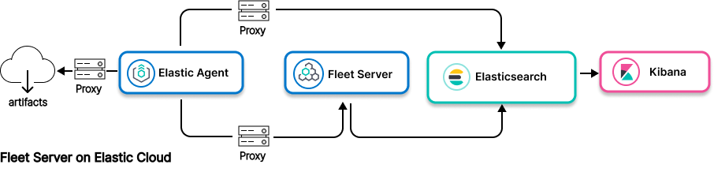
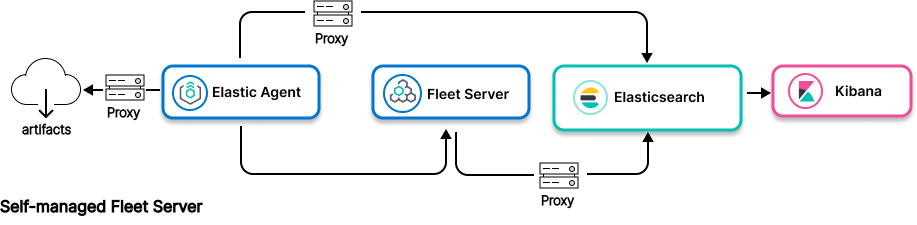

Elastic Agent to proxy to Elasticsearchedit


- Ingest model
-
Data path: Elastic Agent to proxy to Elasticsearch
Control path:-
Elastic Agent to proxy to Fleet Server to Elasticsearch (for Fleet Server on Elastic Cloud) or
- Elastic Agent to Fleet Server to proxy to Elasticsearch (for self-managed Fleet Server)
-
Elastic Agent to proxy to Fleet Server to Elasticsearch (for Fleet Server on Elastic Cloud) or
- Use when
-
- Network restrictions prevent connection between Elastic Agent network and network where Fleet Server and Elastic Stack are deployed, as when Fleet Server is deployed on Elastic Cloud
- Network restrictions preventconnection between Elastic Agent and Fleet Server network and the network where Elastic Stack is deployed, as when Elastic Stack is deployed on Elastic Cloud
Resourcesedit
Info on Elastic Agent and agent integrations:
Info on using a proxy server:
Info on Elasticsearch: